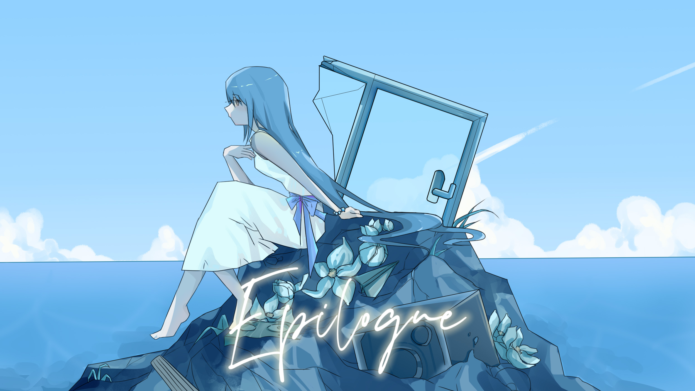

Epilogue

Art by Moshi
作品介绍
《Epilogue》对我来说是Ipomoea alba的一次结语，但是仅仅是那些炽烈到失控、幼稚到不堪的情绪的结束，感情并没有消失。
我明白人生是你的，也明白再怎么呼喊都无法改变什么，于是前半段只剩木吉他和声音，甚至保持了某种轻快，一种单方面的假装轻松，像把单方面的告别藏进日常语气里，试图让一切看起来没那么严重。
副歌的情绪是遗憾与落空，但不是剧烈崩塌，反而更像回望时勉强扬起的微笑。副歌的和声走向是我之前没来得及说出口分享的小事，并不戏剧化，原本只是普通的聊天、普通的下次再说。
偏偏就是这种普通，最后变成了再也无法兑现的空白。
从第一段副歌结束开始，现实开始涌入，回忆开始变重。理智的继续生活下去，像一切都在往前走，但那种空荡却更明显了。
雨季窗边与黑色笔记本又是属于 Ipomoea alba 的初夏。
还有海边小镇与对岸的蓝，来自我在那个时期去 Weymouth 旅行时看到的景象，明亮、辽阔、带距离感，看得见却抵达不了。
结尾我用了重复段淡出，像海潮一般退去。
不需要一个尖锐的结论，也不需要“我终于释怀了”这样的漂亮话。潮水退了就退了，沙面依旧湿着。
对我而言《Epilogue》也是我自己觉得最有感情的几首之一，靠一种几乎轻得要消失的方式，把结束写得更接近生活本身。
歌词（Part 1）
遠い国へ行くと聞きました
大丈夫だ、わかってる
君の人生は君のものだ
いくら叫んでも 最低だ
宝物のような その笑顔はセピア色になった
淡い雨季の窓辺で 手元の黒いノートに
一緒に見られなかった海を 街を 全部を
目に見えない 果てしない不安を
真夜中に捨てたのだ
それから君はいつも
悲しげに歩いていた
きっと今の私には
もう干渉できないことなんだ
対岸の青、海辺の町
砂浜を歩いている
もう一回
君のことを思い出した
歌词（Part 2）
嘘みたいに 君がいなければ何も意味がないんだ
淡い雨季の窓辺に 夏だけが残された
なぜ留まらないのかは もう問い詰めたりしない
この答えはもういらない
だから全部捨てたのだ
宝物のような その笑顔はセピア色になった
淡い雨季の窓辺で 手元の黒いノートに
こんな歌を書いたって 意味がないのなら
明日も将来も期待も もういらない…